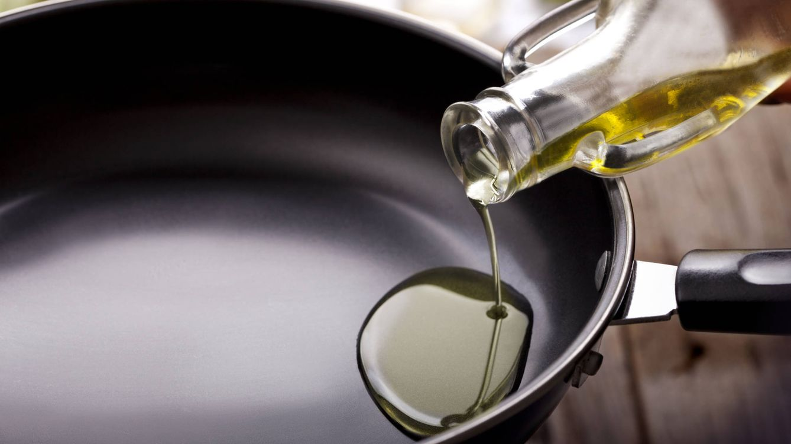

Ingredientes
- 2 pechugas de pollo, deshuesadas.
- 2 cucharadas de aceite de oliva.
- Exprimir medio limón.
- 2 dientes de ajo, picados.
- Sal y pimienta al gusto.
- 1 cucharadita de hierbas secas (como tomillo o romero).
Paso a paso
- Lava y seca las pechugas de pollo.

- Salpica un poco de limón, ajo picado, sal, pimienta y hierbas. Marina durante 15 minutos.
- Calienta el aceite de oliva en una sartén grande a fuego medio-alto.

- Cocina el pollo 6-8 minutos por cada lado hasta que estén doradas y cocidas por completo.

- Sirve caliente con tus guarniciones favoritas.

Resultado final
Disfruta de esta receta.
Volver al principio